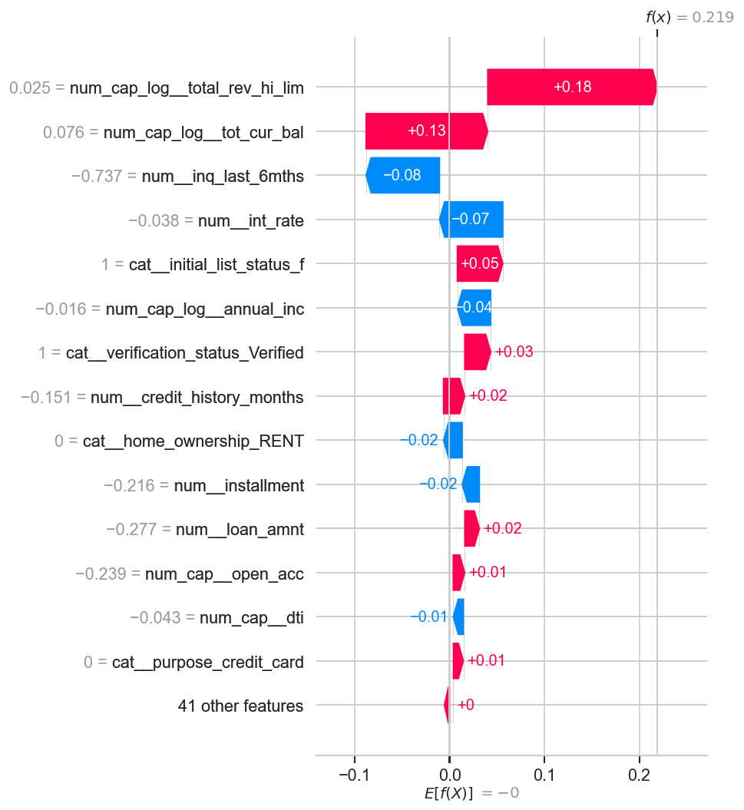
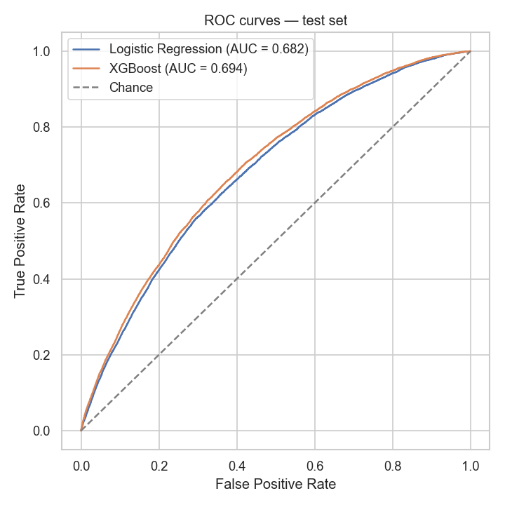
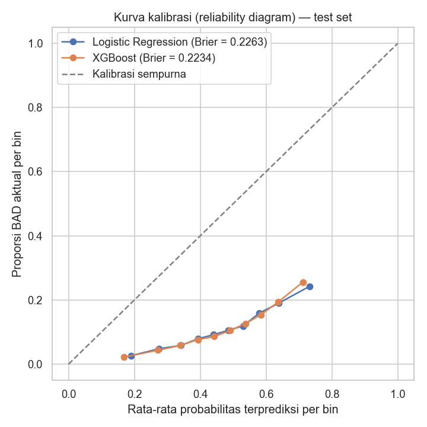

02 · Data & Leak-Free Design
Proof the model isn't cheating: put the leaky columns back, watch AUC jump to 0.955.
466,285 rows × 75 raw columns, audited one by one: used as-is, engineered into a new feature, kept only as the label source, or dropped — with a documented reason for each.
Raw Data
📄
loan_data_2007_2014.csv
466,285 rows · 75 columns
🔍
Column audit
used / engineered / label / dropped
🚫
Leakage removal
total_pymnt, recoveries, out_prncp…
↓
Feature Engineering
⚙️
PercentileCapper
1st–99th pct, fit on train fold only
📉
log1p transform
annual_inc, revol_bal, tot_cur_bal…
🚩
Missing-is-informative flags
has_delinq_history…
↓
Split & Encode
✂️
80/20 stratified split
before any transformer is fit
🔢
ColumnTransformer
impute, scale, one-hot — train only
Key engineering decisions
- Leak-free by design — post-disbursement columns (
total_pymnt, recoveries, out_prncp…) are dropped because they don't exist at the moment a loan is originated
- PercentileCapper fit per fold — outlier caps for skewed monetary features are learned from the training fold only, never from the full dataset before splitting
- Split before fit — the 80/20 stratified split happens before any transformer sees the data, so nothing from the test set leaks into preprocessing
- Missing-is-informative — high-missingness delinquency/derogatory-record columns become binary flags instead of being dropped or naively imputed
- Full column audit — all 75 raw columns documented as used / engineered / label source / dropped, with a reason for each
The Leakage Proof — Not an Assumption
→
+ 4 post-disbursement columns
→
Accuracy 0.954, AUC 0.955
→
Not a better model — a leak
To confirm the leak-free design actually matters, I retrained the identical Logistic Regression with four post-disbursement columns put back in. Accuracy jumped to 95.4% and ROC-AUC to 0.955 — instantly. That's not a better model; it's the model reading the answer key. It's the reason the "real" ROC-AUC on this problem tops out around 0.68–0.70, not 0.95 — and why that lower number is the trustworthy one.
03 · Exploratory Data Analysis
Bad rate climbs monotonically, grade A to G. But no single feature predicts risk alone.

EDA Bad-loan rate by grade, term, and home ownership
- Grade signal — bad-loan rate rises from ~4% at grade A to ~28% at grade G; LendingClub's own grading already captures most of the risk signal
- Term & ownership — 60-month loans default roughly 1.5× more often than 36-month loans; renters and "other/none" home-ownership categories run hotter than mortgage holders
- No dominant single feature — the strongest individual numeric correlation with the target is
int_rate, and it's only ≈0.17; credit risk signal is nonlinear and interaction-driven, which is the argument for a tree model
- Statistically confirmed — Chi-square confirms every categorical feature (grade, term, purpose, home_ownership, verification_status) associates significantly with the target; ANOVA confirms the same for the numeric features, with
int_rate's F-statistic (~14,670) dwarfing the rest
- Unsupervised confirmation — K-Means + PCA segmentation finds 4 natural borrower clusters with 7%–15% bad rates, without ever seeing the label
04 · Model Selection
Logistic Regression baseline, XGBoost selected — on ranking quality, not on one metric.
Baseline
Logistic Regression
Higher recall, weaker ranking & calibration
Selected
XGBoost
✓ Selected — better AUC/KS/Brier, SHAP-ready
XGBoost doesn't win on every metric — at its own F1-optimal threshold, Logistic Regression actually catches more bad loans (52.5% recall vs 47.0%). XGBoost is selected because it ranks borrowers better overall (higher ROC-AUC and KS statistic, lower Brier score) and because SHAP works natively on trees, which makes the explainability layer downstream more informative. Both thresholds are tuned separately via F1-optimal cutoffs found from out-of-fold cross-validation on the training data — never from the test set.
Why Accuracy Isn't the Headline Metric
Three more experiments, reported honestly
- SMOTE — oversampling instead of class-weighting lands within a rounding error (F1 0.283 vs 0.291) — confirms weighting was the cheaper, equally effective choice at 373K training rows
- RandomizedSearchCV — a wider hyperparameter search nudges ROC-AUC to 0.696 — a marginal gain, not worth the added complexity
- PCA — compressing 55 encoded features to 21 components brought no improvement, and was discarded
- Soft-voting ensemble — averaging Logistic Regression + XGBoost lands between the two (ROC-AUC 0.691) — a useful negative result: averaging pulls the stronger model down when the two aren't equally strong
05 · Explainability
int_rate dominates. annual_inc protects. SHAP explains one score, not just the aggregate.
Gain-based feature importance ranks features in aggregate but can't explain a single prediction. SHAP adds per-prediction, additive attribution — and a direction, not just a magnitude.

Global SHAP summary — XGBoost, test set

Local Waterfall — a typical borrower
- int_rate dominates every other feature, with a clean directional pattern — high values sharply raise risk, low values sharply lower it
- annual_inc is protective and the second-strongest signal — higher income, lower predicted risk
- inq_last_6mths consistently raises risk — more recent credit inquiries, higher predicted default probability
- Local explanation answers a different question — for a typical borrower (median numeric, mode categorical features), a high revolving-credit limit and current balance (
total_rev_hi_lim, tot_cur_bal) push their score up, while a low recent-inquiry count pulls it back down. That's what lets a credit officer explain one decision, not just the model in general
06 · Stress-Testing the Model
Four ways I tried to break my own model — and what survived.
A single train/test split proves less than it looks like it proves. Four separate checks — chronology, distribution shift, feature dependency, and calibration — each tried to find where the model would fail.
Check · Time
Out-of-Time Validation
0.705
ROC-AUC, chronological split
↑ from 0.694 random split
Trained on originations Jun 2007–Aug 2014, tested on Aug–Dec 2014 instead of a random split. AUC and KS both rose — the model generalizes forward in time, not just within-sample.
Check · Drift
Population Stability Index
0.111
PSI, train vs. test scores
"Moderate shift" band
Score-distribution shift between older and newer originations is detectable but not alarming — consistent with a lower bad rate in the newer cohort (7.1% vs 12.2%).
Check · Dependency
Grade Ablation
0.6939
ROC-AUC without grade
vs 0.6940 with grade
Removing LendingClub's own underwriting grade barely moves ROC-AUC. The model isn't just re-deriving LendingClub's grade — int_rate already carries nearly the same signal.
Check · Calibration
Probability Calibration
0.223
Brier score, XGBoost
predicted avg 46% vs actual 11.2%
Raw probabilities are NOT calibrated — class-weighting reweights the loss function, so predict_proba() runs hot. Ranking (AUC/KS) and the tuned threshold stay valid; the raw percentage does not.
Check · Subgroup (proxy)
Subgroup Recall Gap
15–20pp
RENT 54.2% vs MORTGAGE 39.7%
not a fair-lending audit
The dataset has no protected demographic attributes, so this is a proxy check, not a fairness audit — but the gap is real and worth flagging before any production use.

ROC Test set — LR 0.682 vs XGBoost 0.694

Calibration Brier — LR 0.226, XGBoost 0.223
In the highest-risk bin, XGBoost predicts an average probability of ≈71% — but the actual bad rate in that same bin is only ≈26%. Both curves sit well below the perfect-calibration line for most of their range, and a naive model that always predicts the population base rate (≈10%) would actually score a lower Brier than either trained model. Ranking is not the same skill as calibration, and this project only had the first one going in.
07 · From Model to Business Decision
The F1-optimal threshold flags 1 in 5 loans. The cost-optimal threshold flags 9 in 10 — and that's the point.
F1 treats a $2,000 bad loan the same as a $35,000 one. A simplified expected-loss threshold (PD × LGD × EAD) doesn't.
Bad loans missed (FN)5,533
Flagged for review (FP)18,339·19.7%
Total illustrative cost≈$62.9M
Bad loans missed (FN)0
Flagged for review (FP)82,808·88.8%
Total illustrative cost≈$4.1M
≈15×
Lower total illustrative cost vs. F1-optimal
This isn't a bug — it's the direct consequence of the assumed cost ratio. The average loss on a bad loan that slips through (≈$14,000, at LGD=80%) is roughly 280× the assumed manual-review cost (≈$50/case). At that ratio, cost-minimization always tips toward reviewing almost everyone, which defeats the point of an automated filter and likely exceeds any real underwriting team's capacity. A production version needs an explicit capacity constraint (e.g. "the team can review 10–15% of volume") layered on top of the cost logic — a documented next step, not implemented here, because it needs real capacity numbers from an operations team. The LGD and review-cost figures themselves are illustrative too, not derived from the dataset — the post-disbursement recovery columns were never touched, by design.
Highest-risk segment: grade G, 60-month term
2.8% of loan volume, 6.5% of all bad loans in the test set — a bad rate 2.4× the portfolio baseline.
| Grade | Term | n | Actual bad rate | Mean predicted P(bad) |
|---|
| G | 60mo | 620 | 26.61% | 71.53% |
| F | 60mo | 2,023 | 25.21% | 70.25% |
| F | 36mo | 618 | 22.33% | 67.79% |
| E | 60mo | 4,812 | 20.32% | 65.67% |
| E | 36mo | 2,463 | 18.43% | 64.93% |
| D | 36mo | 8,684 | 16.86% | 59.87% |
| D | 60mo | 6,754 | 14.38% | 56.89% |
| C | 36mo | 16,999 | 11.97% | 50.62% |
| C | 60mo | 8,056 | 10.63% | 47.89% |
| B | 36mo | 23,918 | 8.37% | 39.16% |
| B | 60mo | 3,346 | 7.68% | 36.53% |
| A | 60mo | 390 | 5.90% | 25.44% |
| A | 36mo | 14,485 | 3.90% | 23.15% |
Prioritized recommendations
- Tenor-based risk premium (+2–3pp) for grade F/G loans at 60 months — current pricing doesn't fully separate tenor risk within the same grade
- Cap tenor at 36 months for grade G, or require an additional guarantor/collateral for 60-month grade-G loans
- Mandatory manual underwriting review for grade F/G at 60 months — low volume (<3%) keeps added review cost small while this segment drives >6% of portfolio losses
- Re-run segmentation and the model roughly every 6 months as portfolio composition shifts, consistent with the PSI drift already observed
09 · Limitations & Next Steps
What this model can't do yet — said plainly, not buried in an appendix.
Every one of these was found and measured inside the project, not guessed at afterward.
Origination-time features only
Deliberate, to avoid leakage — but it caps the achievable ROC-AUC around 0.68–0.70. A production system could add external credit-bureau data to push past that ceiling.
Right-censored label
GOOD includes loans still marked Current — not yet matured. A small share of those could still default later. An inherent limit of scoring from one historical snapshot, not a modelling mistake.
Raw probabilities uncalibrated
Proven in §06, not assumed. Ranking and the tuned threshold stay valid, but a raw "P(bad)=55%" shouldn't be read literally without a calibration step — CalibratedClassifierCV is the top-priority next iteration.
Cost threshold needs a capacity constraint
Pure cost-minimization flags ≈89% of applicants — not operational without a real review-capacity limit and real LGD/cost numbers from an actual lender.
Next iteration, in order
Probability calibration first (highest priority given §06's findings), then a capacity-constrained cost threshold with real numbers from an operations team, then a wider hyperparameter search. Also on the list: a full fair-lending audit if this were ever deployed with real demographic data attached.